Cut, don't dissolve.
Things arrive in four hard frames over 120ms, like a splice. A slow fade is a film student's idea of drama.

Vol. I · No. 1The black-and-white issueOn the house
The brand guide
No. 01About
Bodega is a small corner shop for web pages. Hand it a page and it gets the page a database, a sign-in, live updates and an AI. It has what you need, it does not make a fuss, and it never asks why.

The look is a 1950s Brooklyn Italian shopfront, shot as a black-and-white mobster film and set like a fashion magazine: a sharp Didone italic, striped awnings, a checkerboard floor, a painted window with a double rule around it. No color, ever.
It is discreet the way good service is discreet. Nobody asks what the database is for. Nobody needs to know who signed in. The page gets what it came for, and the door closes quietly behind it.
The bodega asks no questions. It just gets it done.
Old-school quality, no issues, no questions asked.
Striped scalloped awnings, a checker tile floor, an arched door, window lettering with a double rule.
Black and white, title cards, discretion as a brand. Quiet competence, never parody.
Big, sharp, high-contrast serif letters on a lot of ground, with plain sans beside them.
No. 02Voice
Deadpan, discreet, quietly sure of itself. Short sentences that end in a full stop. It never apologizes, never explains itself twice and never asks why you want something.
BODEGA in the wordmark. Bodega in a sentence. Say "Bodega", never "the Bodega platform".
Headlines and sentences are sentence case. Labels, buttons and chips are ALL CAPS with wide tracking.
| Moment | Copy |
|---|---|
| Tagline | No questions asked. |
| Sign-in | Who sent you? |
| Main button | Get it done |
| Cancel | Never mind |
| Delete | Throw it out, then "Gone for good." |
| Success | Done. |
| Loading | One moment. |
| Empty shelf | Nothing on the shelf. |
| No permission | Not on the list. |
| Not found | Can't find it. |
| Too many requests | Come back in a minute. |
| Offline | We're closed. |
| Free tier | On the house. |

No. 03Color
Strictly black and white, in two themes. Day is a white ground with black ink. Night is the same thing inverted, and it is the default on screen. There is no accent color.
Emphasis is inversion: a black fill block with on-fill text. A grey surface-200 is allowed for wells and table stripes. Every text pair is at least 4.5:1, and every border and focus ring at least 3:1, in both themes.
surface-100Page ground.
surface-200Wells and table stripes.
ink · line · fill · focusText, borders, solid fills, focus rings.
ink-mutedSecondary text, taglines, labels.
line-softQuiet dividers and receipt rules.
on-fill · fieldText on a fill. Input background.
Every state is a word, a glyph and a border style together. Errors begin with ✕.
No. 04Type
Three faces. A sharp Didone for the name and headlines, a square sans for everything you read, a typewriter for receipts.
Bodega
Instrument Serif. Italic for the name, headlines and the tagline. Roman for quieter titles. Never bold, never below 28px.
Bodega
Allo. Body text, labels and buttons. Headings and labels set roundness to 0 ("ROND" 0) so the letters stay square.
BODEGA
Space Mono. Typewriter lines, always capitals on a receipt. Also code and data.
site.db.collection("notes")No. 05Shape and line
Square corners everywhere. Thick borders, a double rule like window lettering, and a hard sign-painter shadow with no blur.
Square. The one curve is the arch of a shop door or window: radius-pill on the top two corners. Chips are the only full pill.
Controls and panels carry a 3px border. A panel adds a double-rule frame (shadow-frame). Rules inside a panel are 1px dashed.
A hard offset in the ink color: 3px at rest, 6px when raised or hovered. No blur, ever.
Awning stripes at a 32px pitch with half-round scallops, a checker tile floor, and a halftone dot field used sparingly. No gradients, grain or noise.
No. 06Motion
A good shopkeeper doesn't perform. Motion in Bodega is a cut, a press and a nod: it tells you something happened, then gets out of the way.
Things arrive in four hard frames over 120ms, like a splice. A slow fade is a film student's idea of drama.
Nothing takes longer than 300ms. A press answers in 40ms. If you can watch it finish, it's too slow.
Exits take 90ms, entrances 300ms. Nobody waits for the door to close.
Buttons rise 3px toward you on hover and sink 3px into the page when pressed. Three pixels. Never more.
cubic-bezier(0.23, 1, 0.32, 1). Quick out of the gate, settles quietly. No bounce, no elastic, no overshoot.
Never scale from zero. Start at .97 and 8px away. Things were already in the shop; you just noticed them.
Animate transform and box-shadow only. Never transition: all. Layout stays put.
No spinners, no skeleton shimmer. A label that says "Sending" with three stepped dots, or "One moment."
If an animation doesn't tell you what just happened, it's decoration. Bodega doesn't decorate. With reduced motion on, everything simply appears.
● Open
● Open
| Moment | Duration | Curve |
|---|---|---|
| Press | 40ms | ease-out (the one curve) |
| Hover lift, focus lift | 120–150ms | ease-out |
| Appear (panels, states) | 120ms | steps(4, end) |
| Exit | 90ms | ease-out, to scale .98 and transparent |
| Enter after a swap | 300ms, children 40ms apart | ease-out, from 8px and scale .97 |
| An error | 240ms, once | A short shake, then a dashed border |
Never: bounce, parallax, fade-in on scroll, confetti, loading spinners, skeleton shimmer, or anything that loops while you're trying to read. The ticker at the top is the one sign in the window, and it stops for reduced motion.
No. 07Components
Plain CSS classes, prefixed bd-, built on the tokens. Any page can use them. Night above, Day below.
One filled button per screen. Quiet is outlined. Danger is dashed and always says THROW IT OUT. Disabled goes grey and dotted and loses its shadow.
The input and the button are one block. Focus lifts it toward you, pressing sinks it. The button stays outlined until there's an address worth sending to, then fills. Type one and see.
Labels are short nouns in caps. Solid border by default, dashed when invalid. Errors start with ✕.
Your page has a database. Nobody asked why.
The first hundred requests cost nothing.
The default carries the double-rule frame. Raised swaps it for the hard shadow. Leave 4px around a framed panel.
A shop doorway, for the one thing a visitor must do first. Keep it around 320px so the curve stays a half circle.
Usage, billing and confirmations. Space Mono in caps, a double-ruled total, "Come again."
No questions asked.
A 1950s film title card for hero statements and section breaks. One per screen, under six words.
The awning goes once per screen, across the very top, never behind text; use a width that's a multiple of 64px so stripes land whole. One pattern per screen, kept to a strip or a corner.
There is no icon set. Use these Unicode glyphs in the label style. If an icon must be drawn: a 3px stroke, square caps, one ink. No emoji.
No. 08Logo
Four logos, each in one ink. Black for light grounds, -reverse in white for dark grounds. A logo in an image can't change color, so pick the file that matches the ground.
bodega-wordmark-reverse.svgSVGbodega-wordmark.svgSVG
bodega-sign-reverse.svgSVGbodega-sign.svgSVGbodega-monogram-reverse.svgSVGbodega-monogram.svgSVGbodega-mark-reverse.svgSVGbodega-mark.svgSVG| Logo | What it is | Use |
|---|---|---|
| Wordmark | BODEGA in Instrument Serif Italic, outlined | The main logo. Headers, documents, anywhere there is room. |
| Sign | Awning, wordmark, double rule and "No questions asked" | Storefront moments: splash screens, posters, social cards. |
| Monogram | A door-shaped arch with the italic B knocked out | App icon, avatar, favicon. |
| Awning mark | The striped awning alone | Small badges and dividers. Never the only logo on a page. |
No. 09Tokens
Every value above, by name. Download tokens.json to use them elsewhere.
| Token | Day | Night | Use |
|---|---|---|---|
radius-none | 0px | Everything by default. | |
radius-pill | 999px | The status chip, and the top corners of an Arch. | |
border-thick | 3px | Controls, panels and title cards. | |
border-thin | 1px | Rules inside a panel and receipt lines. | |
shadow-hard | 6px 6px 0 0 #000 | 6px 6px 0 0 #fff | Raised panels and hovered buttons. |
shadow-hard-sm | 3px 3px 0 0 #000 | 3px 3px 0 0 #fff | Buttons and chips at rest. |
shadow-frame | 0 0 0 3px #fff, 0 0 0 4px #000 | 0 0 0 3px #000, 0 0 0 4px #fff | The double-rule frame around a panel. |
A solid 3px focus outline with a 3px offset, on every interactive element. Tab through this page to see it.
Credits
Photographs: two archival black-and-white prints, via Unsplash.
Instrument Serif and Space Mono are open-source fonts from Google Fonts. Allo is by Josh Puckett (allo.joshpuckett.me). All three are licensed under the SIL Open Font License.